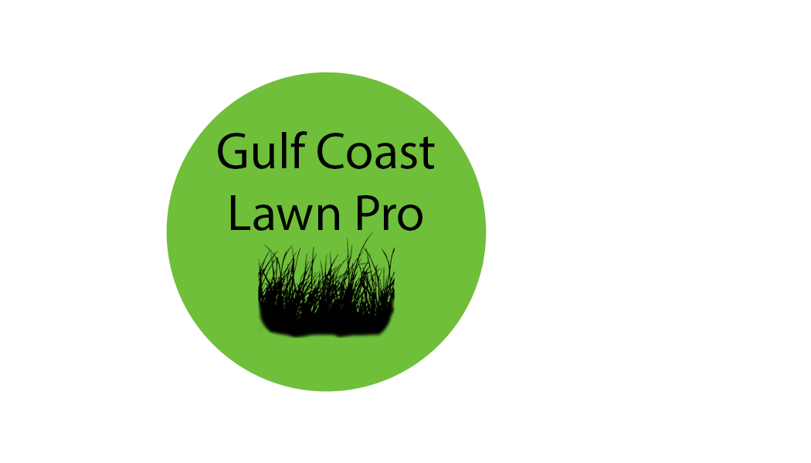
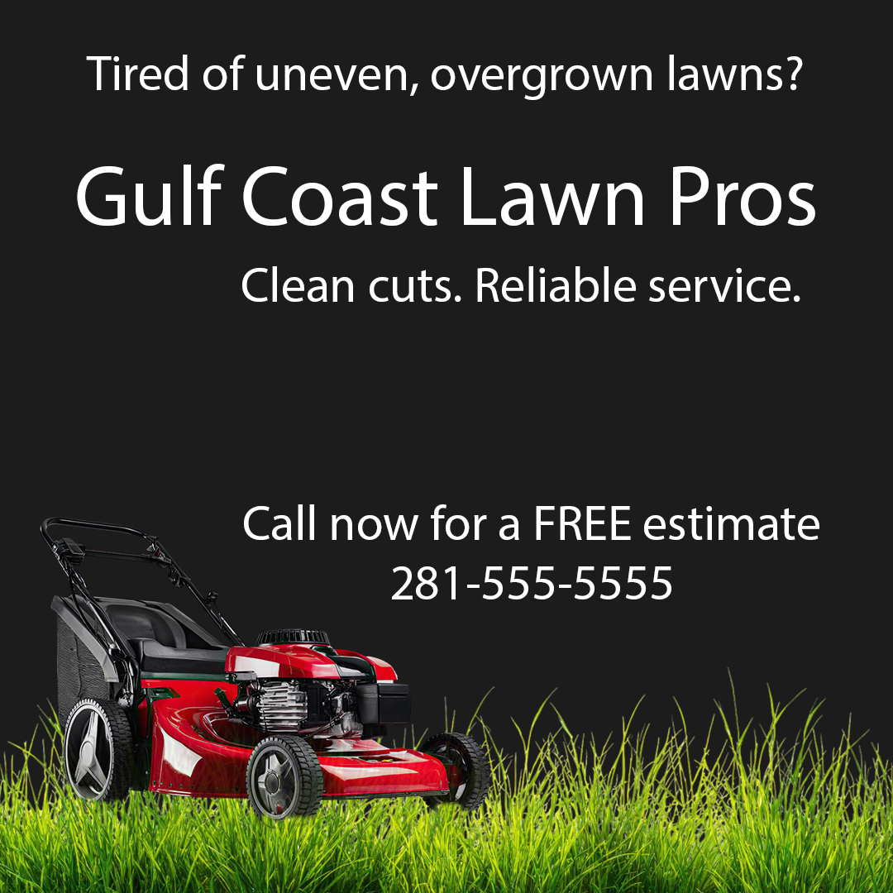

Photoshop Project 1: Dammaged Photo Repair

Marie Before Repair

Marie After Repair
I decided to repair a picture of an old family friend, Marie, that was damaged in Hurricane Harvey. I scanned it into my computer. On the advice of ChatGPT, I downloaded it at 600 DPI setting as a PNG file, and then uploaded it into Photoshop. First, I duplicated the first layer and named it Original- Do not touch, then named the newly created layer Base Repair Layer for non-destructive editing, so I can always go back to the original if needed. I locked the original, then used the patch tool to gradually remove the white spots on her shirt for large repair areas. The shirt ended up looking dirty, so I switched to the healing tool, although I was having trouble getting it to work. Then my computer froze, and I had to shut it down for the day
On day 2, I finally got the healing tool to work once I turned on content-aware. Then I used it on the face and part of the neck, and applied the spot-healing tool in a few places. I created another layer for the background and set it to a warm beige. Then I went to the top menu and chose Select and Mask to mask the image on the base repair layer. Fortuanately I consulted ChatGPT before I accidentally deleted the primary image. I then clicked the mask symbol at the bottom of the layers panel to reverse the masking. After this, I noticed how unnatural her hair looked, so I used the brush toolto add some wisps of hair on the edge of her hair. I then realized that I edited the actual copy of the image, instead of having a layer on top and editing on top of it, so this would probably count as destructive editing-even though I retained the original on a locked layer. At that point I'd spent too much time and wasn't willing to redo it. At this point I stopped because I was afraid if I kept going I'd lose all of the texture and shadows. It's not perfect, but it's the best I can do with my current skills. When I finally remembered to start editing on a second layer, I thought it actually looks a little better without the last bit of editing, but I'm going to include it anyway.
Photoshop Project 2: Branding Package for a Startup





Assets
- lawn photo graphic
- small patch graphic
- lawnmower graphic
On day one, I decided to create a branding package for a fictional lawn service. I created a custom size using the settings recommended by ChatGPT. I started with the business card, creating art boards for the front and back, and set the background to a light black color. I added a grass photo graphic on one layer, then added the business name and business number in separate layers using the text tool, opting for white font. On the back side of the card, I created layers for the grass, phone number, and email, leaving room to add the logo after I make it. Next, I duplicated the back card artboard and named it 'logo'. I used the ellipse tool, holding down the Shift key, to create the circle background, then filled it with green. On a separate layer, I added a small patch of grass graphic, right-clicked, and chose blending options > color overlay> black to make the graphic black. I made two more layers to put the business name text in black.
On day two, I downloaded my logo as a PDF and uploaded it to the library so I could put it on the back of the card. To create the hero banner, I opened a new file with the settings recommended by my friend ChatGPT and used the same background and grass graphic on separate layers. I kept accidentally creating an extra text layer that I had to delete on both days. I added the logo from the library, the business name, and the rest of the text to 4 different layers. I opened another file with square dimensions for the social media post. As with the others, I used a black background, grass graphic, and added a lawnmower graphic on different layers. To make the lawnmower look like it was in the grass rather than on top of it, I clicked Mask > Subtract from Mask, then used the Brush tool to erase some of the tires. I then exported all of those files as PNGs for my project file.